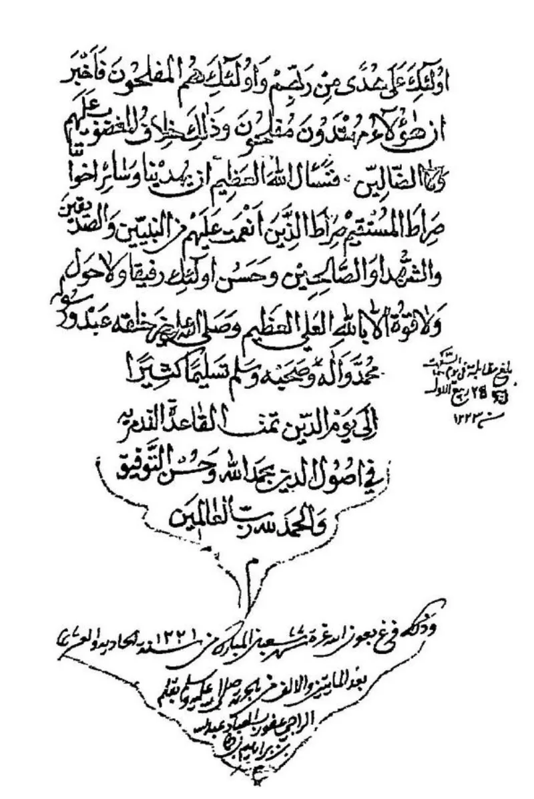
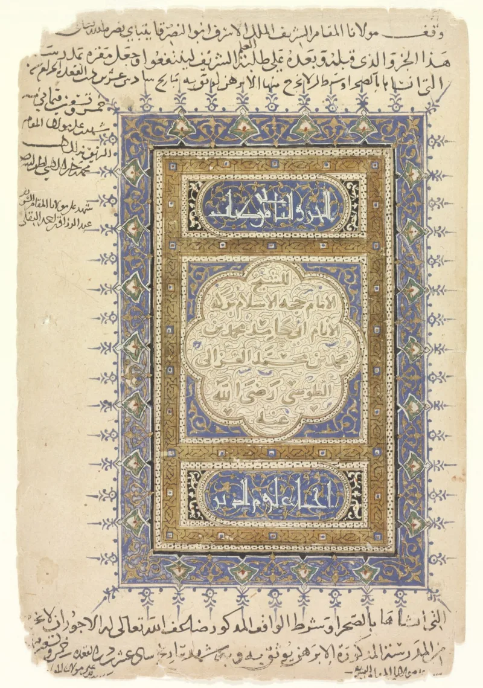
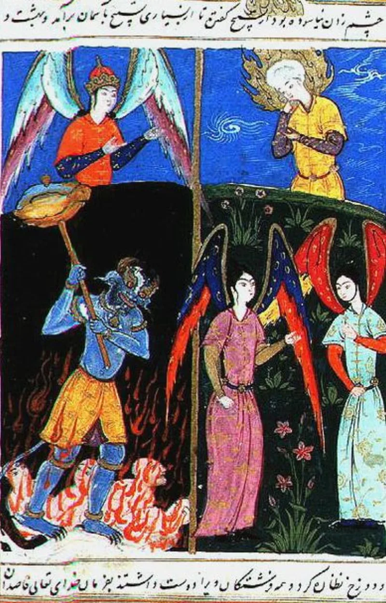

Muslim scholars have a real answer here. Say so before your friend does.
Qadar is the Islamic doctrine of divine decree. Allah decrees everything, including who believes and who does not.
"We have created for Hell many of the jinn and mankind" (Quran 7:179). "Whomever Allah leaves astray, none can guide" (7:178).
"Nothing will befall us except what Allah has decreed for us" (9:51). "You do not will unless Allah wills" (76:30; 81:29).
Quran 14:4 says he sends astray whom he wills.
In Sahih al-Bukhari 6594 an angel writes each person's deeds before birth, and whether he is doomed or blessed. Sahih al-Bukhari 6596 is headed "The pen has dried." So people are made for Hell, and then punished for what was written.
Sunni orthodoxy answers with kasb, acquisition, from the Ash'ari school. Allah creates every act, but the person acquires it, and so bears the blame.
Knowing in advance is not forcing. Quran 32:13 says he could have given every soul its guidance, so guidance withheld is just.
IslamQA 264354 says both decree and responsibility are affirmed, and that reason must submit where it cannot join them.
Genuinely arguable, and handle it with care. Kasb renames the problem rather than solving it — Muslim scholars themselves listed it among the famously obscure doctrines.
But your friend may quote Calvinist writers back at you, and fairly. Christians argue hard about sovereignty and freedom too.
The answer is that no Christian tradition says God delights in damnation, or makes men in order to damn them.
"Our God says he takes no pleasure in the death of the wicked, and pleads with people to choose life. Ezekiel 33:11, Deuteronomy 30:19."



They say Allah creates the act and the man acquires it, so blame is his.
Sunni orthodoxy answers with the Ash'ari doctrine of kasb, or acquisition. Allah creates every act, but the human acquires it, and so bears responsibility. Knowing in advance, and writing it down, is not the same as forcing.
And 32:13 says: had We willed, We could have given every soul its guidance. So guidance withheld is withheld justly. IslamQA 264354 frames this as a matter where reason must submit. Both the decree and human responsibility are affirmed, without being fully reconciled.
Arguable, so handle with care: your friend may quote Calvin back at you.
Kasb re-labels the problem rather than solving it. Muslim scholars themselves proverbially listed al-Ash'ari's kasb among the famously unintelligible doctrines. And the Quran's language is stronger than mere foreknowledge. It says created for Hell (7:179), I will surely fill Hell (32:13), and that Allah sends astray whom He wills (14:4).
The biblical contrast is the point for conversation. The God of Scripture takes no pleasure in the death of the wicked (Ezekiel 33:11; compare 18:23). He desires all people to be saved (1 Timothy 2:4; 2 Peter 3:9). And he pleads, choose life (Deuteronomy 30:19). Christians who debate sovereignty and freedom do so inside those limits. The Quran removes them.
Handle with care, since a Muslim may quote Calvinist material back at you. The answer is that no Christian tradition teaches that God delights in damnation, or creates men in order to damn them.